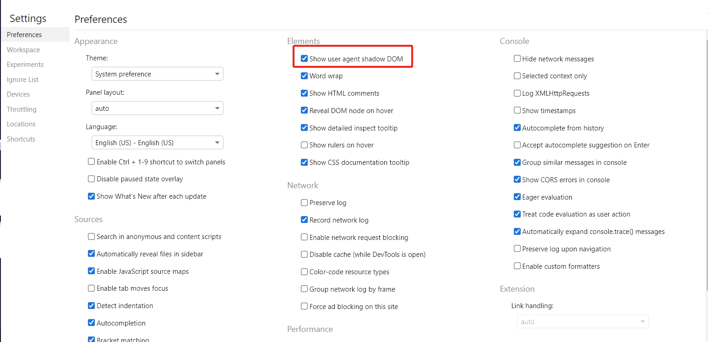
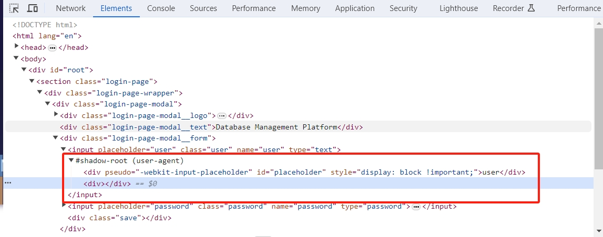
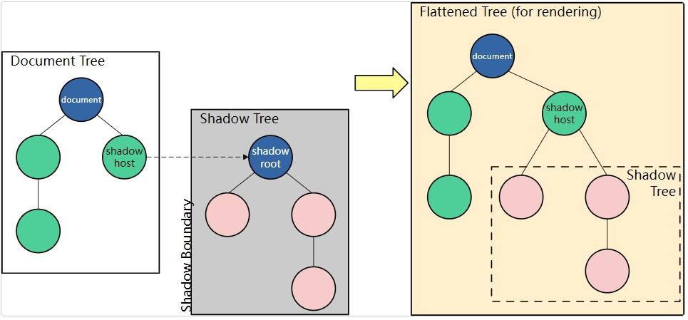
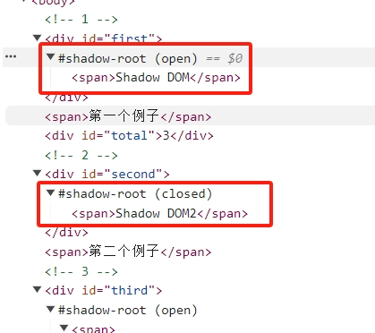
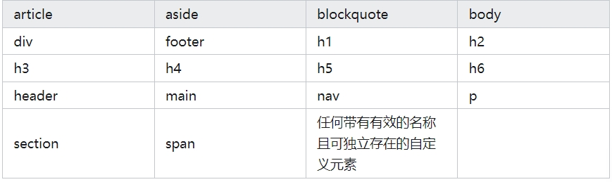
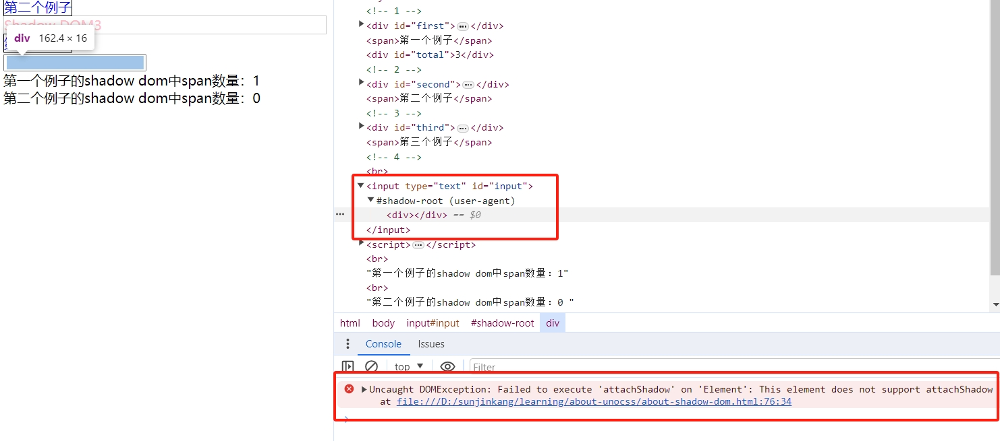
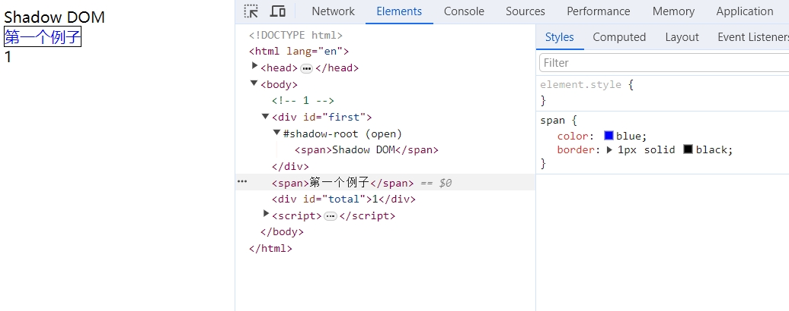
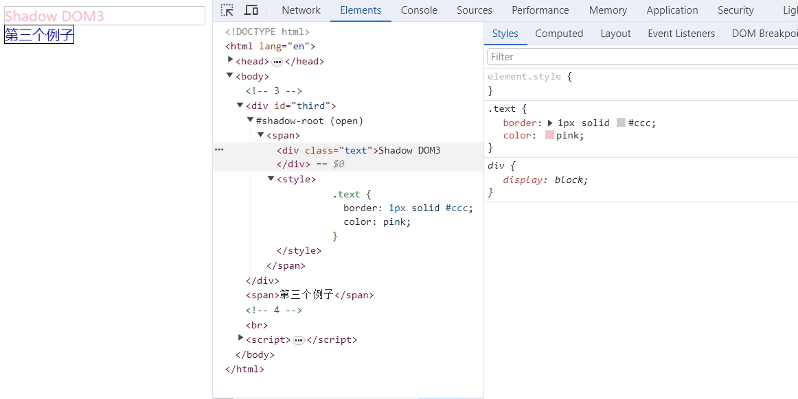
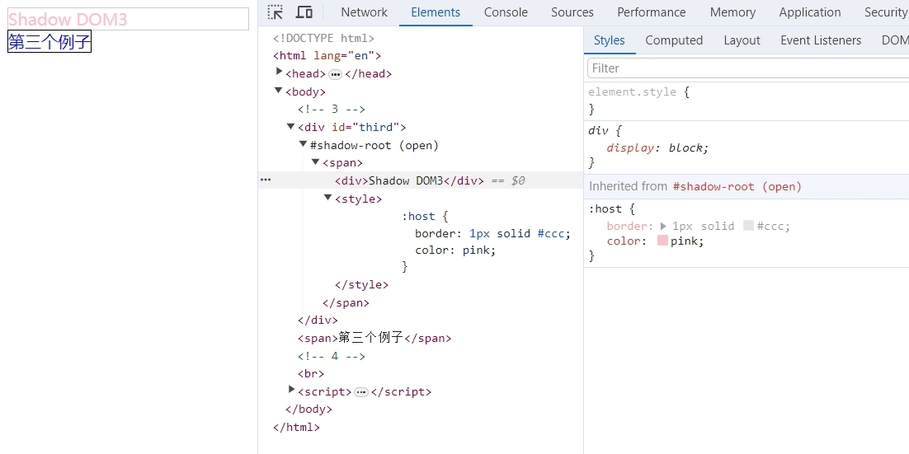
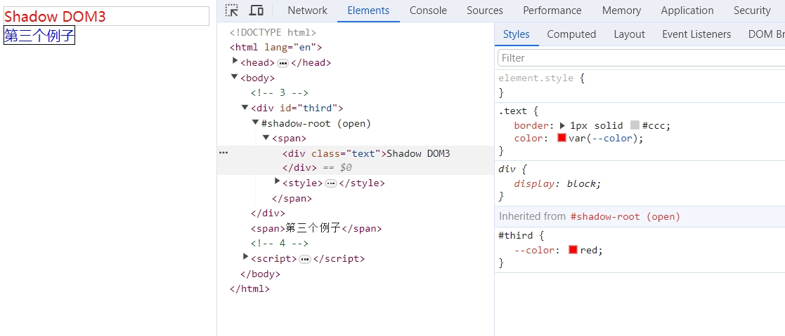

关于shadow dom及如何创建一个shadow dom
什么是Shadow Dom？
一种连接节点的树状结构，代表标记文档（通常是在 web 文档中的 HTML 文档）中出现的不同元素和文本字符串。
浏览器渲染文档的时候会给指定的DOM结构插入编写好的DOM元素，但是插入的Shadow DOM 会与主文档的DOM保持分离，也就是说Shadow DOM不存在于主DOM树上。并且Shadow DOM封装出来的DOM元素是独立的，外部的配置不会影响到内部，内部的配置也不会影响外部。
Chrome中查看Shadow Dom
1.打开浏览器控制台的设置选项
2.找到Preference -> Elements，把show user anent shadow dom勾上


Shadow Dom的结构

Shadow DOM术语
Shadow host: Shadow DOM 附加到的常规 DOM 节点。
Shadow tree: Shadow DOM 内部的 DOM 树。
Shadow boundary: Shadow DOM 终止，常规 DOM 开始的地方。
Shadow root: Shadow tree的根节点。
Shadow DOM的作用及如何创建Shadow DOM？
作用
Shadow DOM是独立于DOM树的，外部的样式不会影响到Shadow DOM的内部，并且使用一般的javascript操作dom的方式去操作Shadow DOM，都是不生效的。这种良好的密封性，使得Shadow DOM可以用于创建类似video这类的标签，方便开发。
如何创建Shadow DOM？
使用attachShadow给指定元素挂载一个shadow dom，并且返回对shadow root的引用。
1 | // html |
Shadow DOM mode
使用attachShadow()方法，必须传递一个对象作为参数来指定shadow DOM树的封装模式，否则将会抛出一个TypeError。该对象必须具有mode属性，值为 open 或 closed。
open
shadow root 元素可以从 js 外部访问根节点，例如使用 shadowRoot:1
2const shadowSpan = firstParent.shadowRoot?.querySelectorAll('span');
// shadowRoot 返回一个 ShadowRoot 对象closed
拒绝从 js 外部访问关闭的 shadow root 节点, shadowRoot 返回 null

可以挂载Shadow DOM的标签

注意：如果将Shadow DOM挂载到不可挂载标签上，挂载会失败，控制台会报错。

Shadow DOM特点
- 外部的样式不影响Shadow DOM内部
Shadow DOM是游离在 DOM 树之外的节点树，所以文档上的CSS不会作用在他身上

在MDN上提到了两种方式可以修改Shadow DOM的样式，感兴趣的可以自己去看看：
https://developer.mozilla.org/zh-CN/docs/Web/API/Web_components/Using_shadow_DOM#%E5%9C%A8%E5%BD%B1%E5%AD%90_dom_%E5%86%85%E5%BA%94%E7%94%A8%E6%A0%B7%E5%BC%8F
这里给Shadow DOM添加样式使用的是第二种：
1 | // html |


样式钩子
shadow dom还有一个非常重要的一个特点就是可以使用CSS自定义属性来创建样式占位符，并允许用户填充。1
2
3
4
5
6
7
8
9
10
11
12
13
14
15
16
17
18
19
20
21
22
23// html
<div id="third"></div>
<span>第三个例子</span>
// style
#third {
--color: red;
}
// js
const thirdParent = document.getElementById('third');
const shadow3 = thirdParent.attachShadow({ mode: 'open' });
const span3 = document.createElement('span');
span3.innerHTML = `
<div class="text">Shadow DOM3</div>
<style>
.text {
border: 1px solid #ccc;
color: var(--color);
}
</style>
`;
使用伪类修改Shadow DOM的内部样式
1
2
3
4
5
6
7
8
9
10
11
12
13
14// style
input[placeholder='user']::-webkit-input-placeholder {
color: red;
font-size: 18px;
}
// html
<input placeholder="user" class="user" name="user" type="text" />
<input
placeholder="password"
class="password"
name="password"
type="text"
/>